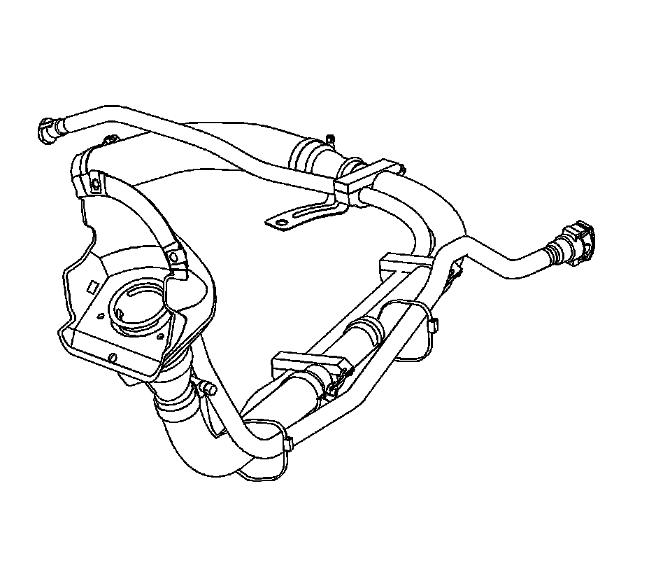
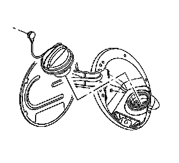
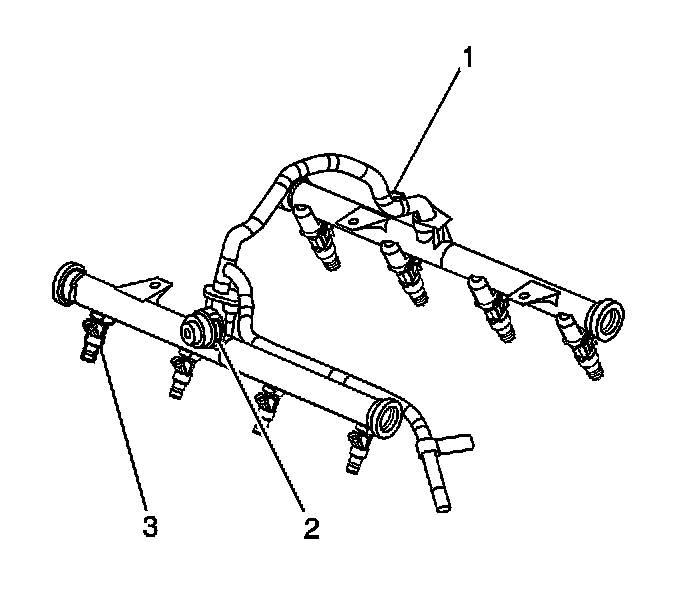
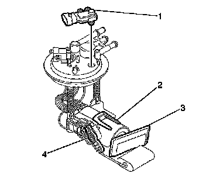
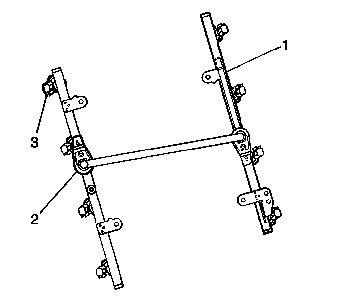

Fuel Delivery and Air Induction: Description and Operation
FUEL SYSTEM DESCRIPTION
FUEL SYSTEM OVERVIEW
The Fuel System is a returnless on-demand design. The fuel pressure regulator is a part of the fuel sender assembly, eliminating the need for a return pipe from the engine. A returnless fuel system reduces the internal temperature of the fuel tank by not returning hot fuel from the engine to the fuel tank. Reducing the internal temperature of the fuel tank results in lower evaporative emissions.
An electric turbine style fuel pump attaches to the fuel sender assembly inside the fuel tank. The fuel pump supplies high pressure fuel through the fuel filter and the fuel feed pipe to the fuel injection system. The fuel pump provides fuel at a higher rate of flow than is needed by the fuel injection system. The fuel pump also supplies fuel to a venturi pump located on the bottom of the fuel sender assembly. The function of the venturi pump is to fill the fuel sender assembly reservoir. The fuel pressure regulator, a part of the fuel sender assembly, maintains the correct fuel pressure to the fuel injection system. The fuel pump and sender assembly contains a reverse flow check valve. The check valve and the fuel pressure regulator maintain fuel pressure in the fuel feed pipe and the fuel rail in order to prevent long cranking times.
E85 FLEX FUEL DESCRIPTION
E85 compatible vehicles no longer use an alcohol sensor to determine and adjust for the alcohol content of the fuel in the tank. Instead, the vehicle calculates the alcohol content of the fuel through measured adjustments.
The ethanol calculation occurs with the engine running after a refueling event has been detected via a measured change in the fuel level sender output. The virtual flex fuel sensor (V-FFS) algorithm temporarily closes the canister purge valve for a few seconds and monitors information from the closed loop fuel trim system to calculate the ethanol content. This logic executes several times until the ethanol calculation is deemed to be stable. This may take several minutes under low fuel flow conditions such as idle, or a shorter time during higher fuel flow, off-idle conditions.
Air-fuel ratios and the corresponding ethanol percentage are updated following each purge-off sequence. the fuel alcohol content percentage value can be read on a scan tool.
When an E85 compatible vehicle is built, an ECM or PCM replaced, or if the learned alcohol content has been reset with a scan tool the fuel system will need to contain ASTM gasoline with 10 percent or less ethanol content.
A minimum of 7.5 Liters (2 gallons) must be put in the tank in order for the vehicle to recognize a re-fueling event. It is not necessary to turn the ignition off in order to have the re-fueling event recognized; however local safety regulations should be followed.
After the re-fueling event, the system registers the amount of fuel that was added, relative to the amount that was in the tank. Reading fuel trim and O2 sensor activity, the system determines if the fuel added was either ASTM Gasoline or ASTM E85. Based on that determination, the system adjusts to the expected alcohol mix in the fuel tank, and then the fuel trim and O2 sensor activity fine tunes the adjustments. The system must remain in closed loop in order for this adjustment to occur. Numerous short trips after switching from gasoline to E85, or E85 to gasoline, can result in driveability symptoms due to the inability of the system to adjust for fuel composition by not attaining closed loop operation.
SWITCHING BETWEEN GASOLINE AND E85
No special precautions need to be taken when switching back and forth between gasoline and E85 other than re-fueling events must be 7.5 Liters (2 gallons) or greater, and the vehicle must remain in closed loop long enough, usually by the time the engine has maintained full operating temperature, to calculate the composition of the new blend in the tank.
FUEL TANKS
The fuel tanks store the fuel supply. The front fuel tank is located on the left side of the vehicle. On dual-tank applications, the secondary fuel tank is located in the rear of the vehicle above the spare tire. The fuel tanks are each held in place by 2 metal straps that attach to the frame. The fuel tanks are molded from high density polyethylene.
FUEL FILL PIPE
The fuel fill pipe has a built-in restrictor in order to prevent refueling with leaded fuel. When refueling dual tank applications, fuel is dispensed to both the front and rear fuel tanks at the same time. Once the fill vent is obstructed, fuel backs up the fill pipe and trips the dispensing nozzle. The front fuel tank vent runs into the rear tank to the top of the filler pipe assembly, which in turn vents to atmosphere. The fuel tank vent valves are connected and route to the canister to collect hydrocarbon emissions during operation of the vehicle.
FUEL FILLER CAP



The fuel fill pipe has a tethered fuel filler cap. A torque-limiting device prevents the cap from being over tightened. To install the cap, turn the cap clockwise until you hear clicks. This indicates that the cap is correctly torqued and fully seated. A built-in device indicates that the fuel filler cap is fully seated. A fuel filler cap that is not fully seated may cause a malfunction in the emission system.
FUEL SENDER ASSEMBLY

The front fuel sender on dual tank applications consists of the following major components:
- The fuel level sensor
- The fuel tank fuel pump module
- The fuel strainer
- The fuel filter

The rear fuel sender on dual tank applications consists of the following major components:
- The fuel level sensor (4)
- The FTP sensor (1)
- The rear fuel pump (2)
The fuel sender assembly on single tank applications consists of the following major components:
- The fuel level sensor
- The fuel tank pressure (FTP) sensor
- The fuel tank fuel pump module
- The fuel strainer
- The fuel filter
FUEL LEVEL SENSOR
The fuel level sensor consists of a float, a wire float arm, and a ceramic resistor cord. The position of the float arm indicates the fuel level. The fuel level sensor contains a variable resistor, which changes resistance in correspondence to the amount of fuel in the fuel tank. The engine control module (ECM) sends the fuel level information via the class 2 circuit to the instrument panel (I/P) cluster. This information is used for the I/P fuel gage and the low fuel warning indicator, if applicable. The ECM also monitors the fuel level input for various diagnostics.
FUEL PUMP
The fuel pump is mounted in the fuel sender assembly reservoir. The fuel pump is an electric high pressure pump. Fuel is pumped to the fuel rail at a specified flow and pressure. The fuel pump delivers a constant flow of fuel to the engine during low fuel conditions and aggressive vehicle maneuvers. The engine control module (ECM) controls the electric fuel pump operation through a fuel pump relay. The fuel pump flex pipe acts to dampen the fuel pulses and noise generated by the fuel pump.
REAR FUEL PUMP (DUAL TANK APPLICATIONS ONLY)
On dual tank applications, the rear fuel pump is located in the rear fuel tank. The rear fuel pump is powered by a secondary fuel pump relay when the fuel level drops below a predetermined value. Fuel is transferred from the rear fuel tank to the front fuel tank in order to ensure all of the usable fuel volume is available to the front fuel pump. The secondary fuel pump relay supply voltage is received from the primary fuel pump relay when the front fuel pump is energized.
FUEL STRAINER
The fuel strainer attaches to the lower end of the fuel sender. The fuel strainer is made of woven plastic. The functions of the fuel strainer are to filter contaminants and to wick fuel. Fuel stoppage at this point indicates that the fuel tank contains an abnormal amount of sediment.
FUEL FILTER
The fuel filter is contained in the fuel sender assembly inside the fuel tank. the paper filter element of the fuel filter traps particles in the fuel that may damage the fuel injection system. The fuel filter housing is made to withstand maximum fuel system pressure, exposure to fuel additives, and changes in temperature. There is no service interval for fuel filter replacement.
NYLON FUEL PIPES
CAUTION: Refer to Fuel and Evaporative Emission Pipe Caution.
Nylon pipes are constructed to withstand maximum fuel system pressure, exposure to fuel additives, and changes in temperature. There are 3 sizes of nylon pipes used: 9.5 mm (3/8 in) ID for the fuel supply, 7.6 mm (5/16 in) ID for the fuel return, and 12.7 mm (1/2 in) ID for the vent. Heat resistant rubber hose or corrugated plastic conduit protects the sections of the pipes that are exposed to chafing, to high temperatures, or to vibration.
Nylon fuel pipes are somewhat flexible and can be formed around gradual turns under the vehicle. However, if nylon fuel pipes are forced into sharp bends, the pipes kink and restrict the fuel flow. Also, once exposed to fuel, nylon pipes may become stiffer and are more likely to kink if bent too far. Take special care when working on a vehicle with nylon fuel pipes.
QUICK-CONNECT FITTINGS
Quick-connect fittings provide a simplified means of installing and connecting fuel system components. The fittings consist of a unique female connector and a compatible male pipe end. O-rings, located inside the female connector, provide the fuel seal. Integral locking tabs inside the female connector hold the fittings together.
ON-BOARD REFUELING VAPOR RECOVERY SYSTEM (ORVR)
The On-Board Refueling Vapor Recovery System (ORVR) is an on-board vehicle system designed to recover fuel vapors during the vehicle refueling operation. The flow of liquid fuel down the fuel filler pipe provides a liquid seal which prevents vapor from leaving the fuel filler pipe. An evaporative emission (EVAP) pipe transports the fuel vapor to the EVAP canister for use by the engine.
FUEL PIPE O-RINGS
O-rings seal the threaded connections in the fuel system. Fuel system O-ring seals are made of special material. Service the O-ring seals with the correct service part.
FUEL RAIL ASSEMBLY

The fuel rail assembly attaches to the engine intake manifold. The fuel rail assembly performs the following functions:
- Positions the injectors (3) in the intake manifold
- Distributes fuel evenly to the injectors (2)
- Fuel rail feed pipe (1)
FUEL INJECTORS
The fuel injector assembly is a solenoid device controlled by the engine control module (ECM) that meters pressurized fuel to a single engine cylinder. The ECM energizes the injector solenoid to open a normally closed ball valve. This allows the fuel to flow into the top of the injector, past the ball valve, and through a director plate at the injector outlet. The director plate has machined holes that control the fuel flow, generating a spray of finely atomized fuel at the injector tip. Fuel from the injector tip is directed at the intake valve, causing the fuel to become further atomized and vaporized before entering the combustion chamber. This fine atomization improves fuel economy and emissions.
FUEL PRESSURE REGULATOR
The fuel pressure regulator is contained in the fuel sender assembly.
FUEL METERING MODES OF OPERATION
The engine control module (ECM) monitors voltages from several sensors in order to determine how much fuel to give the engine. The ECM controls the amount of fuel delivered to the engine by changing the fuel injector pulse width. The fuel is delivered under one of several modes.
STARTING MODE
When the ignition is first turned ON, the ECM energizes the fuel pump relay for 2 seconds. This allows the fuel pump to build pressure in the fuel system. The ECM calculates the air/fuel ratio based on inputs from the engine coolant temperature (ECT), mass air flow (MAF), manifold absolute pressure (MAP), and throttle position (TP) sensors. The system stays in starting mode until the engine speed reaches a predetermined RPM.
CLEAR FLOOD MODE
If the engine floods, clear the engine by pressing the accelerator pedal down to the floor and then crank the engine. When the TP sensor is at wide open throttle (WOT), the ECM reduces the fuel injector pulse width in order to increase the air to fuel ratio. The ECM holds this injector rate as long as the throttle stays wide open and the engine speed is below a predetermined RPM. If the throttle is not held wide open, the ECM returns to the starting mode.
RUN MODE
The run mode has 2 conditions called Open Loop and Closed Loop. When the engine is first started and the engine speed is above a predetermined RPM, the system begins Open Loop operation. The ECM ignores the signal from the heated oxygen sensors (HO2S). The ECM calculates the air/fuel ratio based on inputs from the ECT, MAF, MAP, and TP sensors. The system stays in Open Loop until meeting the following conditions:
- Both front HO2S have varying voltage output, showing that both HO2S are hot enough to operate properly.
- The ECT sensor is above a specified temperature.
- A specific amount of time has elapsed after starting the engine.
Specific values for the above conditions exist for each different engine, and are stored in the electrically erasable programmable read-only memory (EEPROM). The system begins Closed Loop operation after reaching these values. In Closed Loop, the ECM calculates the air/fuel ratio, injector ON time, based upon the signal from various sensors, but mainly from the HO2S. This allows the air/fuel ratio to stay very close to 14.7:1.
ACCELERATION MODE
When the driver pushes on the accelerator pedal, air flow into the cylinders increases rapidly. To prevent possible hesitation, the ECM increases the pulse width to the injectors to provide extra fuel during acceleration. This is also known as power enrichment. The ECM determines the amount of fuel required based upon the TP, the ECT, the MAP, the MAF, and the engine speed.
DECELERATION MODE
When the driver releases the accelerator pedal, air flow into the engine is reduced. The ECM monitors the corresponding changes in the TP, the MAP, and the MAF. The ECM shuts OFF fuel completely if the deceleration is very rapid, or for long periods, such as long, closed-throttle coast-down. The fuel shuts OFF in order to prevent damage to the catalytic converters.
BATTERY VOLTAGE CORRECTION MODE
When the battery voltage is low, the ECM compensates for the weak spark delivered by the ignition system in the following ways:
- Increasing the amount of fuel delivered
- Increasing the idle RPM
- Increasing the ignition dwell time
FUEL CUTOFF MODE
The ECM cuts OFF fuel from the fuel injectors when the following conditions are met in order to protect the powertrain from damage and improve driveability:
- The ignition is OFF. This prevents engine run-on.
- The ignition is ON but there is no ignition reference signal. This prevents flooding or backfiring.
- The engine speed is too high, above red line.
- The vehicle speed is too high, above rated tire speed.
- During an extended, high speed, closed throttle coast down-This reduces emissions and increases engine braking.
- During extended deceleration, in order to prevent damage to the catalytic converters
FUEL TRIM
The engine control module (ECM) controls the air/fuel metering system in order to provide the best possible combination of driveability, fuel economy, and emission control. The ECM monitors the heated oxygen sensor (HO2S) signal voltage while in Closed Loop and regulates the fuel delivery by adjusting the pulse width of the fuel injectors based on this signal. The ideal fuel trim values are around 0 percent for both short term and long term fuel trim. A positive fuel trim value indicates the ECM is adding fuel in order to compensate for a lean condition by increasing the pulse width. A negative fuel trim value indicates that the ECM is reducing the amount of fuel in order to compensate for a rich condition by decreasing the pulse width. A change made to the fuel delivery changes the short term and long term fuel trim values. The short term fuel trim values change rapidly in response to the HO2S signal voltage. These changes fine tune the engine fueling. The long term fuel trim makes coarse adjustments to the fueling in order to re-center and restore control to short term fuel trim. A scan tool can be used to monitor the short term and long term fuel trim values. The long term fuel trim diagnostic is based on an average of several of the long term speed load learn cells. The ECM selects the cells based on the engine speed and engine load. If the ECM detects an excessive lean or rich condition, the ECM will set a fuel trim diagnostic trouble code (DTC).